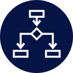

The six components of usable and effective process maps

Process Visualization
Incorporating existing stages, teams, and documents into process flows and creating a visual representation to use as a guideline provides detailed information for use by employees, system developers, and management. The visualizations help ensure employees meet milestones are met, and vendors complete projects on-time and on-budget. Many programs, including Visio, Bizagi, and Draw.io allow end-users to easily visualize the process, decisions, system and department interactions, as well as other types of associated information. However, all process maps should have six core components to create the impact management needs.
Documentation
Keeping accurate records of transactions and handovers between internal and external stakeholders is critical to delivering the highest level of quality of service and customer satisfaction. Employees should understand the position of each critical document in the process flow and not proceed with the next step in the process before ensuring the document requirements are met.
RACI
Redesigning a process requires a clear understanding of the roles of each team and supporting relationships between internal and external stakeholders. Each step in the process should denote the specific role responsible for the task by “swim lanes” – the rows on a process map that denote responsible parties. Marking who is Responsible, Accountable, Consulted, and Informed at each step will reduce or eliminate confusion during implementation.
Cycle Times
Having an overview of workflows and timelines enables the development of clearly defined cycle times for each step within a process flow for both internal and external stakeholders. This ensures that every team member is aware of their roles and responsibilities and can complete processes in the shortest time possible. Vendors can also see their role in the timeline and ensure they meet SLAs.
Systems Interactions
In addition to who needs to do what in a process, a standardized process map should denote the where. Process maps should specify the system used for a process, whether SAP, Tarantula, Excel, or an employee’s hard-copy logbook. Knowing what systems are currently in use (in an as-is process map) is one of the best indicators for potential improvements.
Approvals
Process maps sometimes highlight redundant approval steps or opportunities to delegate to lower management, particularly around payments and contracts. Empowering lower management to approve purchases or decisions within an agreed upon value limit removes the burden on senior management to approve requests and allows them to focus on more strategic decisions for the company. Senior management may be able to approve all requests when the company is small, but delegation is necessary for scalable growth.
Flexibility
While creating standardized processes is a critical start, it is certainly not the end. The final step in creating effective processes is guaranteeing their flexibility and adaptability. Instituting a PMO to engage end-users in continuous process improvement must be a central element of any towerco’s process management.
Interested in learning more? Find the next article in this series, “The Roadmap to Operational Excellence”, here.